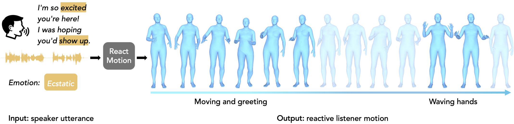
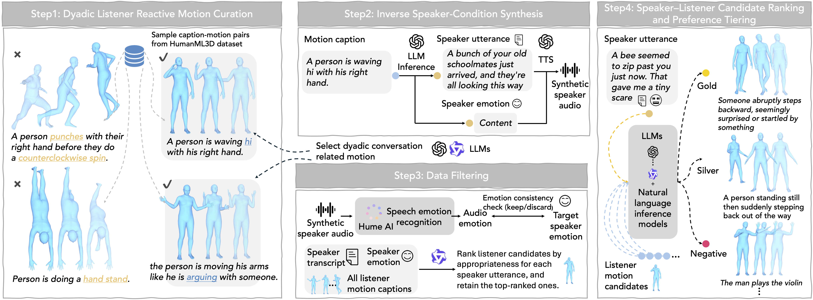
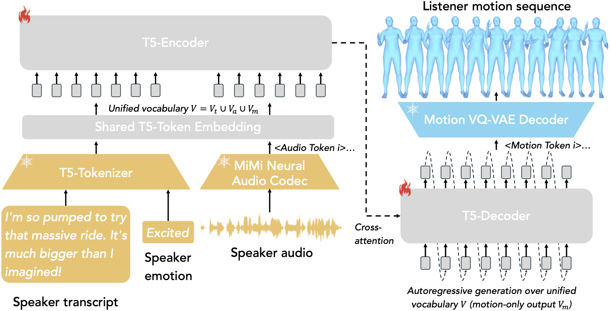
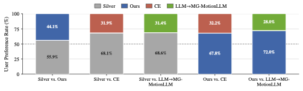

You Look
ReactMotion Generating Reactive Listener Motions from Speaker Utterance
Generating naturalistic listener body motions that appropriately respond to speaker utterances
Generating naturalistic listener body motions that appropriately respond to speaker utterances

In this paper, we introduce a new task, Reactive Listener Motion Generation from Speaker Utterance, which aims to generate naturalistic listener body motions that appropriately respond to a speaker's utterance. However, modeling such nonverbal listener behaviors remains underexplored and challenging due to the inherently non-deterministic nature of human reactions.
To facilitate this task, we present ReactMotionNet, a large-scale dataset that pairs speaker utterances with multiple candidate listener motions annotated with varying degrees of appropriateness. This dataset design explicitly captures the one-to-many nature of listener behavior and provides supervision beyond a single ground-truth motion. Building on this dataset design, we develop preference-oriented evaluation protocols tailored to evaluate reactive appropriateness, where conventional motion metrics focusing on input–motion alignment ignore.
We further propose ReactMotion, a unified generative framework that jointly models text, audio, emotion, and motion, and is trained with preference-based objectives to encourage both appropriate and diverse listener responses. Extensive experiments show that ReactMotion outperforms retrieval baselines and cascaded LLM-based pipelines, generating more natural, diverse, and appropriate listener motions.
One-to-many speaker utterance–listener reaction mappings with graded appropriateness annotations
To bridge the gap between existing 3D human motion datasets and real-world conversational dynamics, we construct ReactMotionNet by repurposing existing motion data into speaker–listener pairs using LLMs, avoiding costly data collection.

We curate dyadic listener motions (Step 1), synthesize speaker conditions via inverse inference and TTS (Step 2), filter unreliable samples (Step 3), and rank pairs into gold/silver/negative preferences (Step 4).
Curate reaction-like motions from HumanML3D; filter conversation-irrelevant ones via LLM verifiers.
Infer plausible speaker transcripts and emotion from listener motion captions; synthesize audio via GPT-4o mini TTS.
Verify audio–emotion consistency (Hume AI); score speaker–listener pairs (Qwen) and retain top candidates.
Multi-agent scoring (semantic appropriateness, conversational plausibility) + NLI verification → gold/silver/negative labels.
| Split | #Pairs | #Trans. | #Audio | #Emo. | #Motion | #Motion/Utter. | Labels (𝒢/𝒮/𝒩) |
|---|---|---|---|---|---|---|---|
| Train | 137,879 | 6,631 | 6,631 | 46 | 1,822 | 20.79 | 7,527 / 30,862 / 99,490 |
| Val | 6,790 | 841 | 841 | 40 | 195 | 8.07 | 903 / 1,682 / 4,205 |
| Test | 6,659 | 826 | 826 | 39 | 197 | 8.06 | 877 / 1,652 / 4,130 |
| All | 151,328 | 8,298 | 8,298 | 47 | 2,029 | 18.24 | 9,307 / 34,196 / 107,825 |
8:1:1 train/val/test split by speaker utterance (disjoint across splits). #Pairs = labeled speaker–listener pairs; Labels = Gold/Silver/Negative counts.
Unified framework with modality-specific tokenizers and group-wise preference learning

Modality-specific tokenizers convert speaker utterances (transcript, audio, emotion) and listener motions into discrete tokens. A Seq2Seq model unifies modalities and generates listener reactive motions.
Audio: Moshi (Neural Audio Codec) encodes and quantizes audio into discrete tokens, preserving prosody and paralinguistic cues.
Motion: VQ-based encoder quantizes listener motions into discrete indices; decoder maps predicted tokens back to raw motion.
T5-base backbone with extended vocabulary (text ∪ audio ∪ motion ∪ special tokens). Auto-regressive generation conditioned on speaker utterance.
Gold/Silver/Negative labels per utterance. Soft-margin ranking loss enforces ℓGold > ℓSilver > ℓNegative. Inverse-frequency reweighting mitigates dominance of frequent motions.
